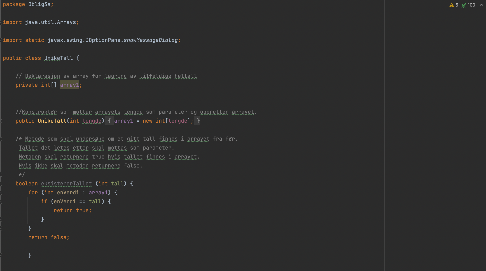
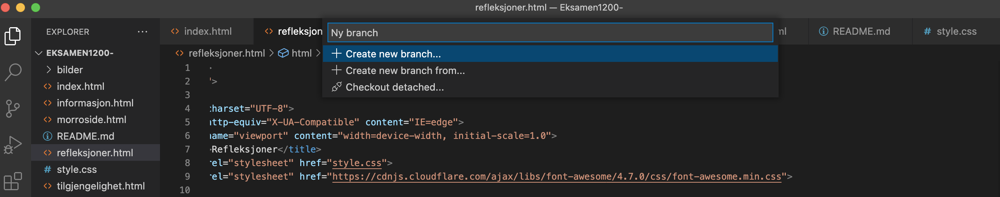
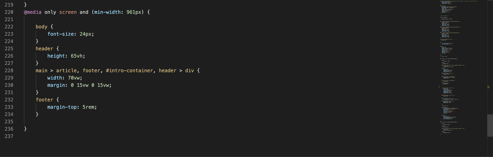

Refleksjoner
Utfordringer ved overgang til studie ved Oslo Met
Overgangen fra jobb til studiet har vært spennende. I jobb kjenner man ofte bedre til hva jobben innebærer, i motsetning til studie hvor man ikke nødvendigvis har kjennskap til emnene man tar. Jeg hadde lite kjennskap til fagnene og var forberedt på at det ville gi frustrasjon og mestring. Uten kjennskap til fagene fra før har det gitt utfordringer i det å måtte planlegge og ha ansvar for egen utvikling og læring. Det er vanskelig å forutse hvor lang tid man vil bruke på å lære seg det grunleggende i fagene. Studiet har hatt mye nettbasert, noe som kan være en frihet og en utfordring samtidig. I faget 1400 "Programmering" har det ligget videoer for hele kurset på Canvas side semesterstart. Det har lagt til rette for å kunne jobbe seg gjennom modulene raskt og effektivt i starten av semesteret, men også gjort det mulig å vente til de obligatoriske oppgavene skal leveres. Personlig har det ført til hurtig gjennomganger rett før innlevering fordi det er mye annet som skal gjøres samtidig. Dette vil nok vise seg å bli en utfordring når vi nærmer oss eksamen i programmering. Men livet som student er ofte preget av litt skippertak og det vil nok gå bra tilslutt. Første halvår på studiet er snart forbi og det var spennende for meg og se om jeg kom til å like fagene. Til nå har studiet absolutt gitt mersmak og jeg gleder meg til et nytt halvår med skippertak og mye læring.
Lære koding
Koding i CSS, HTML og JAVA har vært lærerikt. Jeg hadde ingen erfaringer med hvordan dette fungerte før jeg startet på studiet. I faget 1400 har jeg jobbet mye med grunnforståelsen av programmering og merker at jeg har mye igjen å lære. Her viser jeg et kodeeksempel fra JAVA.
I CSS og HTML har det være relevant å jobbe med de obligatoriske oppgavene i forkant av eksamen. Oppgavene har til tider gitt mye frustrasjon, men også stor mestring når vi klarte å løse de. Jeg har lært hvordan en hjemmeside er bygd opp og hvordan vi bør tenke for å skape et inkluderende design.
Vi møtte på mange utfordringer i løsingen av de ulike oppgavene i faget 1200 «Webutvikling og inkluderende design». Den største utfordringen i første oppgave var å forstå konseptet med Github. Hvordan kunne vi bruke GitHub til å samarbeide på samme dokument, uten at vi forstyrrer hverandres oppgaver finne den beste måten å løse ting på. Skulle vi ha gjort feil kan vi se tilbake på tidligere løsninger. ettertid er jeg glad for at vi tok oss tid til dette. Det har vært med å forenkle prosessen når vi jobber på eksamensoppgaven. Her viser jeg hvordan vi laget en ny "branch" i GitHub.
I neste oppgave skulle vi jobbe med å utforme en artikkel til å bli lik den vedlagte artikkelen. HTML koden var allerede laget. Dette var med å gi bedre innsikt i hvordan vi kan bruke CSS på ulike måter for å få til utseendet vi ønsker. Det var noen utfordringer vi møtte på i denne oppgaven. Dette gjaldt spesielt det å plasser bildene riktig, få boksene med tekst til å samarbeide og komme i rett rekkefølge. Vi jobbet litt i feil rekkefølge da vi først lagte den for stor skjerm, noe vi i ettertid har lært at vi skal lage mobilskjerm først og deretter legge til rette for større skjermer. Dette var en god erfaring å ta med seg i strukturering av eksamen. Her viser jeg hvordan vi kodet for å tilpasse de ulike skjermene.
